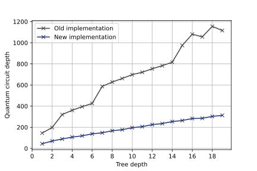

Qrisp 0.3#
We’re excited to present our latest update, packed with a variety of innovative features that will optimize you programming tasks and take them to new heights. Proceed further to explore the innovative enhancements in the latest update of our Qrisp framework!
Quantum Approximate Optimization Algorithm (QAOA) module#
QAOA is the predominant quantum algorithm for combinatoric optimization. Within the past months, we developed a module that smoothly integrates many aspects of this algorithm into Qrisp. Together with the established infrastructure, this module enables you to formulate problems independent of the information encoding. As established for Qrisp, algorithmic elements of QAOA can be supplied as Python functions instead of QuantumCircuits, enabling a high degree of code modularity and maintanbility.
The following is new in Qrisp 0.3 with regard to QAOA
The QAOAProblem class, which facilitates convenient problem formulation and evaluation.
The QAOABenchmark class, which allows you to investigate the performance of your implementations.
Various tutorials that cover a lot of content about QAOA. From the very basics therory to scientific novelties like constrained mixers.
7 different presolved problems from combinatorial optimization.
Qiskit runtime services can now be used as a Qrisp backend.
With the release of Qrisp 0.3 we also introduce a novel mixer architecture that can keep arbitrary constraints intact and has polynomial complexity! Read more about this exciting idea in the QAOA tutorial about constrained mixers.
Upgraded Backtracking#
Due to a new encoding we could improve the performance of the backtracking module by 300%! The plot below shows the circuit depth for trivial reject and accept functions.
{kind=link}

Furthermore the backtracking implementation now has to call the reject function only once per quantum step (previously twice).
Documentation#
Powered by the Thebe framework, the Qrisp documentation is now fully interactive. Furthermore we made some stylistic improvements.
Framework interfacing#
Qrisp QuantumCircuits can now be export to Pennylane and PyTket.
Minor Features#
Arithmetic module uses the ConjugationEnvironment.
Improved the simulator speed for circuits with many measurements. For many QAOA related tasks, we achieved a x2 speed-up.
Implemented
precompiled_qckeyword argument forget_measurementmethods of QuantumVariable and QuantumArray.Implemented not equal method for general QuantumVariables and increased performance for both:
eqandneq.Implemented
custom_controldecorator.Implemented the Saeedi shifting method for the
cyclic_shiftfunction.Improved the substitution speed of large expressions of abstract parameters.
Bug fixes#
Fixed abstract parameters not being treated properly in session merging.
Fixed an error in the decoder of QuantumArray that prevented proper display of bitstring quantum types.
Fixed an issue that prevented the progressbar of the statevector simulator from being properly removed if the simulation is trivial.
Fixed an error that in some cases caused faulty results for symbolic statevector simulation.
Fixed proper error message display for exceptions in IterationEnvironment.
Fixed a bug that caused wrong results for the backtracking algorithm if the reject function did not return equivalent results on non-algorithmic states.
Fixed permeability specification for logic synthesis functions.
Fixed QuantumDictionary loading for pprm synthesis.